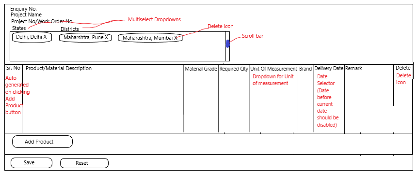

Create/Update Enquiry
User Story
Enquiry is created by buyer. This page will also be used for updating enquiry. Enquiry will have multiple products (will be called Enquired Product for reference) listed in it. Enquired Products listed in enquiry should have separate table than the products created by sellers. Each enquiry can be allocated to a Project. While creating enquiry, project name and Project No/Work Order No. will be added by user. If the project exists (check existence of project by project name and project number for that organization), saving enquiry will map the new enquiry to existing project. If project does not exist, a new project will be created for the organization and the enquiry will be mapped to it.
When New enquiry page loads
- Load enquiry number from backend.
- Enquiry number field should be visible only when user is on this page to update enquiry.
Functioning of UI
- Enquiry number should always be un-editable.
- Add product button will add new row to add product.
- Sr. No. will be auto generated from starting from 1.
- Delete icon will be present for each row. Clicking on it will delete that row.
- Unit of measurement column will have dropdown to select unit for each row.
- Delivery date will be a date selector (you can use date selector provided by nebular library).
- How to select location?
- To select district - Select state and then select corresponding district to create a pair
- To select whole state - Select only State
- Step 1/2 can be repeated multiple times to create more combinations of state and corresponding districts.
-
How to unselect a State district pair?
- Click on cross icon on the pair of state district.
- Save Button will be have text showing "save" if new enquiry is being created.
- Save Button will have text "Update" if existing enquiry is being updated.
- Reset button will delete all rows in table and reset other existing fields except Enquiry No field.
Validators
- Project name - alphanumeric(text) - (Compulsory) - min 3, max 30 char
- Project No - alphanumeric(text) - (Compulsory) - min 1, max 20 char
- Product Description - alphanumeric(text) - (Compulsory) - min 3, max 100 char
- Material Grade - alphanumeric(text) - (Optional) - min 1, max 20 char
- Brand - alphanumeric(text) - (Optional) - min 2, max 20 char
- Remark - alphanumeric(text) - (Compulsory) - min 10, max 100 char
- Delivery Date will be date. (Compulsory)
- Unit of measurement will be dropdown. (Compulsory)
- Required Qty - numeric - (Compulsory) - min 1, max 10
- State
- Optional
- Required to select district
- District
- Optional (no matter state is selected or not).
On Click of Save Button
- If Enquiry No was empty (means new enquiry)
- Create Project if not present
- Create Enquiry
- if enquiry is created successfully
- send email and notification(on ui) to all sellers who has the products listed in enquiry.
- To find the sellers who has the product
- Find by text search on product name and product description.
- Filter seller by location specified in enquiry and the location of seller.
- if enquiry creation fails
- show error message in toastr ("Failed to create Enquiry. Please try again")
- User should be allowed to again save the enquiry with all form fields intact.
- If Enquiry No is present (Means udpate call for enquiry)
- Create Project if not present
- Update Enquiry
- if enquiry is updated successfully
- send email and notification(on ui) to all sellers who has the products listed in enquiry.
- To find the sellers who has the product
- Find by text search on product name and product description.
- Filter seller by location specified in enquiry and the location of seller.
- if enquiry updation fails
- show error message in toastr ("Failed to update Enquiry. Please try again")
- User should be allowed to again save the enquiry with all form fields intact.